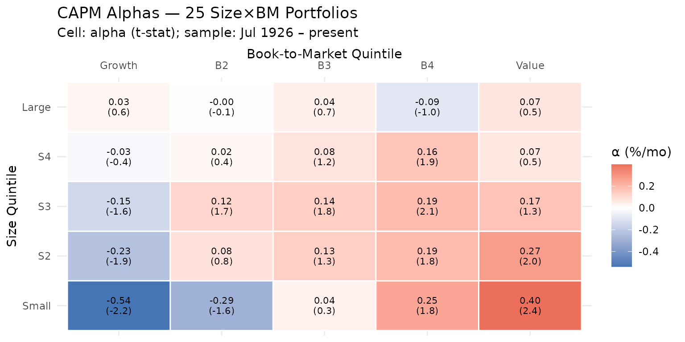
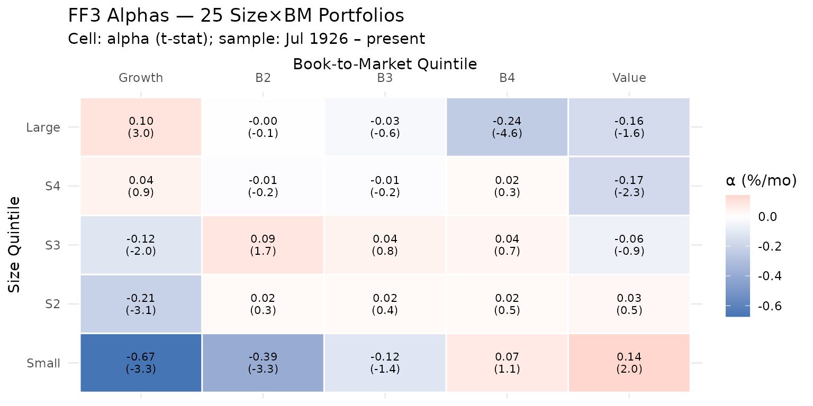
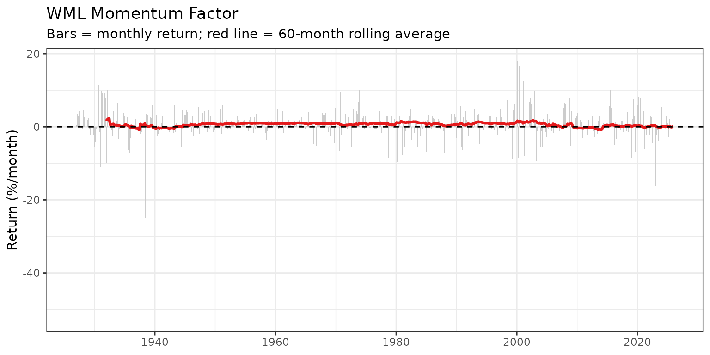
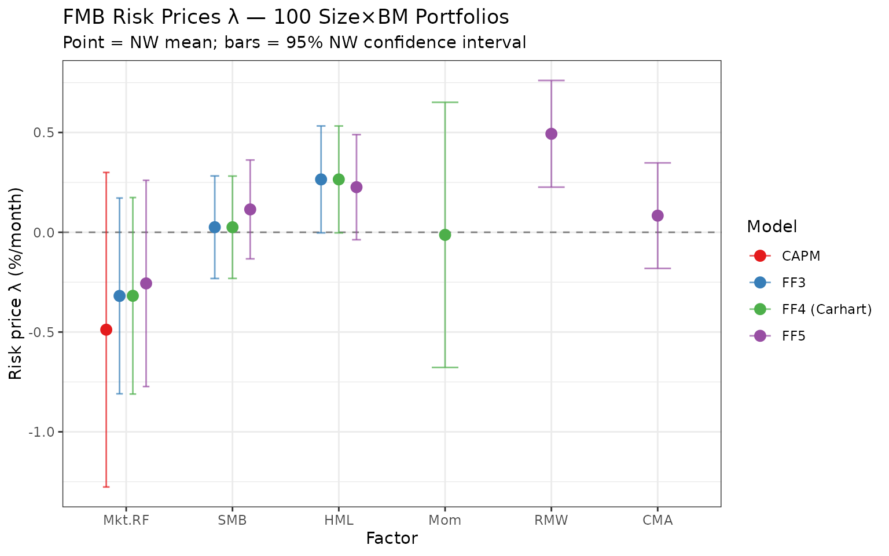

Note: This vignette requires a network connection and downloads several datasets from Kenneth French’s data library (~5–10 seconds per dataset).
This vignette demonstrates a complete empirical asset-pricing workflow using FFdownload. We cover four topics:
- Time-series tests — Do CAPM or FF3 explain the 25 Size×BM portfolio returns?
- GRS test — Joint test that all pricing errors are zero.
- Momentum — Why the FF3 model is not the last word.
- Fama-MacBeth regressions — Do factor betas price the cross-section? Estimated across 100 Size×BM portfolios under CAPM, FF3, FF4, and FF5.
1 Data
1.1 Download
We download everything in one call. na_values converts
French’s missing-value codes (−99, −999, −99.99) to NA;
return_data = TRUE gives us the list directly without a
separate load().
outd <- file.path(tempdir(), paste0("ffap_", format(Sys.time(), "%H%M%S")))
outf <- tempfile(fileext = ".RData")
inputlist <- c(
"25_Portfolios_5x5",
"100_Portfolios_10x10",
"F-F_Research_Data_Factors",
"F-F_Research_Data_5_Factors_2x3",
"F-F_Momentum_Factor"
)
FFdata <- FFdownload(
output_file = outf,
tempd = outd,
exclude_daily = TRUE,
download = TRUE,
download_only = FALSE,
inputlist = inputlist,
format = "tbl",
na_values = c(-99, -999, -99.99),
return_data = TRUE
)
#> | | | 0% | |============== | 20% | |============================ | 40% | |========================================== | 60% | |======================================================== | 80% | |======================================================================| 100%1.2 Extract factors
The FF5 file contains all five factors and the risk-free rate. We use it as the single factor source (available from July 1963), then append the momentum factor.
# FF5 factors: Mkt.RF, SMB, HML, RMW, CMA, RF (start: Jul 1963)
ff5_raw <- FFdata$`x_F-F_Research_Data_5_Factors_2x3`$monthly$Temp2
# FF3 factors back to Jul 1926 (for time-series tests)
ff3_raw <- FFdata$`x_F-F_Research_Data_Factors`$monthly$Temp2
# Momentum factor
mom_raw <- FFdata$`x_F-F_Momentum_Factor`$monthly$Temp2
# Combined factor table (full history where all factors are available)
factors <- ff5_raw |>
select(date, Mkt.RF, SMB, HML, RMW, CMA, RF) |>
left_join(mom_raw |> select(date, Mom), by = "date") |>
filter(!is.na(Mom)) # Mom starts Jan 1927; FF5 starts Jul 1963 → ~Jul 1963
# Factor table with FF3 history (no RMW/CMA/Mom)
factors_ff3hist <- ff3_raw |>
select(date, Mkt.RF, SMB, HML, RF)
cat("Factor sample:", format(min(factors$date)), "to", format(max(factors$date)),
"—", nrow(factors), "months\n")
#> Factor sample: Jul 1963 to Dec 2025 — 750 months
cat("FF3 history :", format(min(factors_ff3hist$date)), "to",
format(max(factors_ff3hist$date)), "—", nrow(factors_ff3hist), "months\n")
#> FF3 history : Jul 1926 to Dec 2025 — 1194 months1.3 Extract test portfolios
# Helper: find the value-weighted returns sub-table by name pattern
find_vw <- function(monthly_list) {
nm <- names(monthly_list)
vw_nm <- grep("value_weight", nm, ignore.case = TRUE, value = TRUE)
if (length(vw_nm) == 0) stop("Cannot find value-weighted sub-table. Available: ",
paste(nm, collapse = ", "))
monthly_list[[vw_nm[1]]]
}
# 25 portfolios
pf25_vw <- find_vw(FFdata$x_25_Portfolios_5x5$monthly)
pf25_cols <- setdiff(names(pf25_vw), "date") # 25 portfolio column names
stopifnot(length(pf25_cols) == 25)
# 100 portfolios
pf100_vw <- find_vw(FFdata$x_100_Portfolios_10x10$monthly)
pf100_cols <- setdiff(names(pf100_vw), "date") # 100 portfolio column names
stopifnot(length(pf100_cols) == 100)
cat("25-pf column names (first 6):", paste(head(pf25_cols, 6), collapse=", "), "\n")
#> 25-pf column names (first 6): SMALL.LoBM, ME1.BM2, ME1.BM3, ME1.BM4, SMALL.HiBM, ME2.BM11.4 Build long panels
# Long panel for 25 portfolios — join with FF3 history
pf25_long <- pf25_vw |>
pivot_longer(-date, names_to = "portfolio", values_to = "ret") |>
left_join(factors_ff3hist, by = "date") |>
mutate(
ret_excess = ret - RF,
# Position-based size (S1=small → S5=large) and BM (B1=growth → B5=value) labels
pf_pos = as.integer(factor(portfolio, levels = pf25_cols)),
size_q = ceiling(pf_pos / 5),
bm_q = ((pf_pos - 1) %% 5) + 1,
size_lbl = factor(size_q, labels = c("Small","S2","S3","S4","Large")),
bm_lbl = factor(bm_q, labels = c("Growth","B2","B3","B4","Value"))
) |>
filter(!is.na(ret_excess), !is.na(Mkt.RF))
# Long panel for 100 portfolios — join with FF5+Mom (1963+)
pf100_long <- pf100_vw |>
pivot_longer(-date, names_to = "portfolio", values_to = "ret") |>
left_join(factors, by = "date") |>
mutate(
ret_excess = ret - RF,
pf_pos = as.integer(factor(portfolio, levels = pf100_cols)),
size_q = ceiling(pf_pos / 10),
bm_q = ((pf_pos - 1) %% 10) + 1
) |>
filter(!is.na(ret_excess), !is.na(Mom)) # FF5+Mom sample (Jul 1963+)
cat("25-pf panel: ", nrow(pf25_long), "rows,", n_distinct(pf25_long$portfolio), "portfolios\n")
#> 25-pf panel: 29850 rows, 25 portfolios
cat("100-pf panel:", nrow(pf100_long), "rows,", n_distinct(pf100_long$portfolio), "portfolios\n")
#> 100-pf panel: 74828 rows, 100 portfolios2 Time-Series Tests: 25 Size×BM Portfolios
2.1 CAPM: large and structured pricing errors
ts_capm <- pf25_long |>
nest_by(portfolio, size_q, bm_q, size_lbl, bm_lbl) |>
mutate(
fit = list(lm(ret_excess ~ Mkt.RF, data = data)),
alpha = coef(fit)[["(Intercept)"]],
alpha_se = summary(fit)$coefficients["(Intercept)", "Std. Error"],
alpha_t = summary(fit)$coefficients["(Intercept)", "t value"],
beta_mkt = coef(fit)[["Mkt.RF"]],
r2 = summary(fit)$r.squared,
n_obs = nrow(data)
) |>
ungroup() |>
select(-data, -fit)
cat("CAPM — mean |alpha|:", round(mean(abs(ts_capm$alpha)), 3), "%/month\n")
#> CAPM — mean |alpha|: 0.151 %/month
cat(" significant alphas (|t| > 2):",
sum(abs(ts_capm$alpha_t) > 2), "of", nrow(ts_capm), "\n")
#> significant alphas (|t| > 2): 4 of 25CAPM alpha heat map (% per month; red = positive alpha, blue = negative):
ggplot(ts_capm, aes(x = bm_lbl, y = size_lbl, fill = alpha)) +
geom_tile(colour = "white", linewidth = 0.5) +
geom_text(aes(label = sprintf("%.2f\n(%.1f)", alpha, alpha_t)),
size = 2.8, lineheight = 0.9) +
scale_fill_gradient2(low = "#4575b4", mid = "white", high = "#d73027",
midpoint = 0, name = "α (%/mo)") +
scale_x_discrete(position = "top") +
labs(title = "CAPM Alphas — 25 Size×BM Portfolios",
subtitle = "Cell: alpha (t-stat); sample: Jul 1926 – present",
x = "Book-to-Market Quintile", y = "Size Quintile") +
theme_minimal(base_size = 11) +
theme(axis.text.x = element_text(angle = 0))
The heat map shows a value tilt in CAPM alphas: portfolios in the highest BM quintile (value) tend to have positive alphas, while growth portfolios cluster near zero or negative. However, with the full sample stretching back to July 1926, the pattern is noisier than in the original Fama-French (1993) paper, which used only 1963–1991 data — a period when the size and value premia were particularly strong. CAPM cannot account for these premia, but statistical significance is limited: only 4 of 25 alphas clear the |t| > 2 threshold at conventional levels.
2.2 FF3: modest improvement over the full sample
ts_ff3 <- pf25_long |>
nest_by(portfolio, size_q, bm_q, size_lbl, bm_lbl) |>
mutate(
fit = list(lm(ret_excess ~ Mkt.RF + SMB + HML, data = data)),
alpha = coef(fit)[["(Intercept)"]],
alpha_se = summary(fit)$coefficients["(Intercept)", "Std. Error"],
alpha_t = summary(fit)$coefficients["(Intercept)", "t value"],
b_mkt = coef(fit)[["Mkt.RF"]],
b_smb = coef(fit)[["SMB"]],
b_hml = coef(fit)[["HML"]],
r2 = summary(fit)$r.squared
) |>
ungroup() |>
select(-data, -fit)
cat("FF3 — mean |alpha|:", round(mean(abs(ts_ff3$alpha)), 3), "%/month\n")
#> FF3 — mean |alpha|: 0.114 %/month
cat(" significant alphas (|t| > 2):",
sum(abs(ts_ff3$alpha_t) > 2), "of", nrow(ts_ff3), "\n")
#> significant alphas (|t| > 2): 7 of 25
ggplot(ts_ff3, aes(x = bm_lbl, y = size_lbl, fill = alpha)) +
geom_tile(colour = "white", linewidth = 0.5) +
geom_text(aes(label = sprintf("%.2f\n(%.1f)", alpha, alpha_t)),
size = 2.8, lineheight = 0.9) +
scale_fill_gradient2(low = "#4575b4", mid = "white", high = "#d73027",
midpoint = 0, name = "α (%/mo)") +
scale_x_discrete(position = "top") +
labs(title = "FF3 Alphas — 25 Size×BM Portfolios",
subtitle = "Cell: alpha (t-stat); sample: Jul 1926 – present",
x = "Book-to-Market Quintile", y = "Size Quintile") +
theme_minimal(base_size = 11)
When run over the full French library sample (July 1926 to present), the FF3 improvement is more muted than the original 1993 paper suggests. Mean absolute alpha falls from 0.151 to 0.114 %/month — a 25% reduction. Notably, the number of statistically significant alphas may increase rather than decrease under FF3: the three factors fit some portfolios well while exposing pricing errors in others that CAPM had masked by a higher residual variance. The value premium has weakened substantially post-2004, a well-documented phenomenon (Fama and French 2015; Hou, Xue and Zhang 2015), which attenuates FF3’s advantage when the recent decades are included.
2.3 Side-by-side comparison
bind_rows(
ts_capm |> mutate(model = "CAPM"),
ts_ff3 |> mutate(model = "FF3")
) |>
mutate(
sig = ifelse(abs(alpha_t) > 2, "p < 0.05", "n.s."),
label = paste0("S", size_q, "B", bm_q)
) |>
ggplot(aes(x = reorder(label, bm_q + (size_q - 1) * 5),
y = alpha, colour = model, shape = sig)) +
geom_hline(yintercept = 0, linetype = "dashed", colour = "grey50") +
geom_errorbar(aes(ymin = alpha - 2 * alpha_se, ymax = alpha + 2 * alpha_se),
width = 0.3, alpha = 0.5) +
geom_point(size = 2.5) +
scale_colour_manual(values = c(CAPM = "#e41a1c", FF3 = "#377eb8")) +
scale_shape_manual(values = c("p < 0.05" = 16, "n.s." = 1)) +
labs(title = "Pricing Errors: CAPM vs FF3",
subtitle = "Portfolios ordered by BM within size quintile; bars = ±2 SE",
x = "Portfolio (S = size, B = book-to-market quintile)",
y = "Alpha (%/month)", colour = "Model", shape = "") +
theme_bw(base_size = 10) +
theme(axis.text.x = element_text(angle = 90, vjust = 0.5, size = 7))
3 GRS Test
The Gibbons, Ross and Shanken (1989) test checks whether all N pricing errors are jointly zero. The statistic is:
grs_test <- function(returns_xmat, factors_xmat) {
# returns_xmat : T × N matrix of excess portfolio returns (no NAs)
# factors_xmat : T × K matrix of factor excess returns
T <- nrow(returns_xmat); N <- ncol(returns_xmat); K <- ncol(factors_xmat)
stopifnot(T > N + K + 1)
# OLS: Y = X*B + E where X = [1 | factors]
X <- cbind(1, factors_xmat)
B <- solve(crossprod(X), crossprod(X, returns_xmat)) # (K+1) × N
E <- returns_xmat - X %*% B # T × N residuals
alpha <- B[1, ] # N intercepts
# MLE residual covariance
Sigma <- crossprod(E) / T
# Factor Sharpe ratio squared
mu_f <- colMeans(factors_xmat)
Omega <- crossprod(scale(factors_xmat, center = TRUE, scale = FALSE)) / T
sr2 <- as.numeric(t(mu_f) %*% solve(Omega) %*% mu_f)
# GRS statistic
grs_stat <- ((T - N - K) / N) *
as.numeric(t(alpha) %*% solve(Sigma) %*% alpha) / (1 + sr2)
p_val <- pf(grs_stat, df1 = N, df2 = T - N - K, lower.tail = FALSE)
list(GRS = round(grs_stat, 3), p_value = round(p_val, 4),
df1 = N, df2 = T - N - K,
mean_abs_alpha = round(mean(abs(alpha)), 4))
}
# Build wide matrices aligned to the same dates
pf25_wide <- pf25_long |>
select(date, portfolio, ret_excess) |>
pivot_wider(names_from = portfolio, values_from = ret_excess)
# Merge factors on same dates and drop any rows with NAs
pf25_merged <- pf25_wide |>
left_join(factors_ff3hist |> select(date, Mkt.RF, SMB, HML), by = "date") |>
drop_na()
ret_mat_25 <- as.matrix(pf25_merged[, pf25_cols])
capm_f_mat <- as.matrix(pf25_merged[, "Mkt.RF", drop = FALSE])
ff3_f_mat <- as.matrix(pf25_merged[, c("Mkt.RF","SMB","HML")])
grs_capm <- grs_test(ret_mat_25, capm_f_mat)
grs_ff3 <- grs_test(ret_mat_25, ff3_f_mat)
tibble(
Model = c("CAPM", "FF3"),
`GRS statistic` = c(grs_capm$GRS, grs_ff3$GRS),
`p-value` = c(grs_capm$p_value, grs_ff3$p_value),
`F(N, T-N-K)` = c(sprintf("F(%d,%d)", grs_capm$df1, grs_capm$df2),
sprintf("F(%d,%d)", grs_ff3$df1, grs_ff3$df2)),
`Mean |α| (%/mo)` = c(grs_capm$mean_abs_alpha, grs_ff3$mean_abs_alpha)
) |>
knitr::kable(digits = 4, align = "lrrrr",
caption = "GRS Test — 25 Size×BM Portfolios")| Model | GRS statistic | p-value | F(N, T-N-K) | Mean |α| (%/mo) |
|---|---|---|---|---|
| CAPM | 3.309 | 0 | F(25,1168) | 0.1510 |
| FF3 | 3.277 | 0 | F(25,1166) | 0.1139 |
Both models are strongly rejected by the GRS test (both p-values ≈ 0). Over the full historical sample the two GRS statistics are close in magnitude (3.309 for CAPM vs 3.277 for FF3), reflecting the fact that the FF3 factors were constructed to price the 1963–1991 period. Extending the sample back to 1926 and forward to the present — where the value premium has weakened considerably — limits how much SMB and HML can reduce the joint pricing errors relative to CAPM. In shorter sub-samples aligned with the original paper, FF3 typically shows a much larger improvement.
4 Momentum: The Anomaly FF3 Cannot Explain
The WML (Winners Minus Losers) factor from Carhart (1997) delivers a large positive return that CAPM and FF3 fail to explain.
# WML time series
wml <- mom_raw |>
select(date, Mom) |>
left_join(factors_ff3hist, by = "date") |>
filter(!is.na(Mom), !is.na(Mkt.RF))
# Average WML return with t-statistic
wml_mean <- mean(wml$Mom)
wml_t <- t.test(wml$Mom)$statistic
# CAPM alpha for WML
fit_wml_capm <- lm(Mom ~ Mkt.RF, data = wml)
# FF3 alpha for WML
fit_wml_ff3 <- lm(Mom ~ Mkt.RF + SMB + HML, data = wml)
mom_summary <- tibble(
Measure = c("Mean WML return", "CAPM alpha", "FF3 alpha"),
`Estimate (%/mo)` = c(wml_mean,
coef(fit_wml_capm)["(Intercept)"],
coef(fit_wml_ff3) ["(Intercept)"]),
`t-statistic` = c(wml_t,
summary(fit_wml_capm)$coef["(Intercept)", "t value"],
summary(fit_wml_ff3) $coef["(Intercept)", "t value"])
)
knitr::kable(mom_summary, digits = 3, align = "lrr",
caption = "Momentum (WML) — Mean Return and Pricing Errors")| Measure | Estimate (%/mo) | t-statistic |
|---|---|---|
| Mean WML return | 0.608 | 4.474 |
| CAPM alpha | 0.818 | 6.365 |
| FF3 alpha | 0.931 | 7.761 |
# Rolling 5-year average WML return
wml |>
mutate(date_num = as.numeric(as.Date(date)),
roll_mean = zoo::rollapply(Mom, width = 60, FUN = mean,
fill = NA, align = "right")) |>
ggplot(aes(x = as.Date(date))) +
geom_col(aes(y = Mom), fill = "grey80", width = 20) +
geom_line(aes(y = roll_mean), colour = "#e41a1c", linewidth = 1) +
geom_hline(yintercept = 0, linetype = "dashed") +
labs(title = "WML Momentum Factor",
subtitle = "Bars = monthly return; red line = 60-month rolling average",
x = NULL, y = "Return (%/month)") +
theme_bw()
The FF3 alpha of WML is large and highly significant — the three-factor model has no mechanism to price momentum. This motivates the Carhart four-factor model and, later, the FF5 model (which also fails to explain momentum).
5 Fama-MacBeth Cross-Sectional Regressions
The Fama and MacBeth (1973) approach tests whether factor betas are priced in the cross-section:
First pass — for each portfolio , estimate factor betas via full-sample time-series regression:
Second pass — each month , regress cross-sectional excess returns on the estimated betas:
Average the monthly estimates and compute Newey-West standard errors to account for serial correlation in the pricing errors.
5.1 Helper functions
# Newey-West standard error for the mean of a time series
nw_se <- function(x, lags = NULL) {
x <- x[!is.na(x)]
T <- length(x)
if (is.null(lags)) lags <- floor(4 * (T / 100)^(2/9))
xd <- x - mean(x)
v <- sum(xd^2) / T
if (lags > 0) {
for (l in seq_len(lags)) {
v <- v + 2 * (1 - l / (lags + 1)) * sum(xd[(l+1):T] * xd[1:(T-l)]) / T
}
}
sqrt(v / T)
}
# Full FMB procedure
# returns_mat : T × N matrix of excess returns
# factors_mat : T × K matrix of factors
fmb <- function(returns_mat, factors_mat, factor_names = NULL) {
T <- nrow(returns_mat); N <- ncol(returns_mat); K <- ncol(factors_mat)
if (is.null(factor_names)) factor_names <- colnames(factors_mat)
# ── First pass: full-sample OLS betas ───────────────────────────────────────
X_ts <- cbind(1, factors_mat)
B_ts <- solve(crossprod(X_ts), crossprod(X_ts, returns_mat))
betas <- t(B_ts[-1, , drop = FALSE]) # N × K
# ── Second pass: monthly cross-sectional regressions ────────────────────────
X_cs <- cbind(1, betas) # N × (K+1)
gammas <- matrix(NA_real_, nrow = T, ncol = K + 1)
for (t in seq_len(T)) {
y_t <- returns_mat[t, ]
ok <- !is.na(y_t)
if (sum(ok) > K + 1) {
gammas[t, ] <- lm.fit(X_cs[ok, , drop = FALSE], y_t[ok])$coefficients
}
}
# ── Average lambdas + Newey-West t-stats ────────────────────────────────────
lambda_names <- c("Intercept", factor_names)
lam_mean <- colMeans(gammas, na.rm = TRUE)
lam_se <- apply(gammas, 2, nw_se)
lam_t <- lam_mean / lam_se
tibble(
term = lambda_names,
lambda = lam_mean,
nw_se = lam_se,
t_stat = lam_t,
signif = case_when(
abs(lam_t) > 3.29 ~ "***",
abs(lam_t) > 2.58 ~ "**",
abs(lam_t) > 1.96 ~ "*",
TRUE ~ ""
)
)
}5.2 Prepare 100-portfolio matrices
# Wide matrices aligned to the same dates (FF5+Mom sample, Jul 1963+)
pf100_wide <- pf100_long |>
select(date, portfolio, ret_excess) |>
pivot_wider(names_from = portfolio, values_from = ret_excess)
pf100_merged <- pf100_wide |>
left_join(factors, by = "date") |>
drop_na()
ret100 <- as.matrix(pf100_merged[, pf100_cols])
f_capm <- as.matrix(pf100_merged[, "Mkt.RF", drop = FALSE])
f_ff3 <- as.matrix(pf100_merged[, c("Mkt.RF","SMB","HML")])
f_ff4 <- as.matrix(pf100_merged[, c("Mkt.RF","SMB","HML","Mom")])
f_ff5 <- as.matrix(pf100_merged[, c("Mkt.RF","SMB","HML","RMW","CMA")])
cat("FMB sample:", format(min(pf100_merged$date)), "to",
format(max(pf100_merged$date)), "—", nrow(pf100_merged), "months\n")
#> FMB sample: Jul 1963 to Dec 2025 — 630 months
cat("100 portfolios x", ncol(ret100), "columns (check: should be 100)\n")
#> 100 portfolios x 100 columns (check: should be 100)5.4 Results
# All factor names across all models
all_terms <- c("Intercept","Mkt.RF","SMB","HML","Mom","RMW","CMA")
fmt_col <- function(res, model_name) {
res |>
mutate(cell = sprintf("%.3f%s (%.2f)", lambda, signif, t_stat)) |>
select(term, cell) |>
right_join(tibble(term = all_terms), by = "term") |>
mutate(cell = replace_na(cell, "\u2014")) |>
rename(!!model_name := cell)
}
fmb_table <- fmt_col(res_capm, "CAPM") |>
left_join(fmt_col(res_ff3, "FF3"), by = "term") |>
left_join(fmt_col(res_ff4, "FF4"), by = "term") |>
left_join(fmt_col(res_ff5, "FF5"), by = "term") |>
rename(Factor = term)
knitr::kable(fmb_table, align = "lcccc",
caption = paste(
"Fama-MacBeth Results — 100 Size x BM Portfolios.",
"Entries: lambda estimate (significance stars) (NW t-stat).",
"*, **, *** = |t| > 1.96, 2.58, 3.29."))| Factor | CAPM | FF3 | FF4 | FF5 |
|---|---|---|---|---|
| Intercept | 1.319*** (3.73) | 1.033*** (4.41) | 1.033*** (4.43) | 0.956*** (3.86) |
| Mkt.RF | -0.488 (-1.21) | -0.319 (-1.27) | -0.318 (-1.27) | -0.256 (-0.97) |
| SMB | — | 0.025 (0.19) | 0.025 (0.19) | 0.115 (0.91) |
| HML | — | 0.265 (1.94) | 0.265 (1.94) | 0.226 (1.68) |
| Mom | — | — | -0.013 (-0.04) | — |
| RMW | — | — | — | 0.494*** (3.62) |
| CMA | — | — | — | 0.083 (0.62) |
# Lambda point estimates with 95% NW confidence intervals
bind_rows(
res_capm |> mutate(model = "CAPM"),
res_ff3 |> mutate(model = "FF3"),
res_ff4 |> mutate(model = "FF4 (Carhart)"),
res_ff5 |> mutate(model = "FF5")
) |>
filter(term != "Intercept") |>
mutate(
lo = lambda - 1.96 * nw_se,
hi = lambda + 1.96 * nw_se,
term = factor(term, levels = c("Mkt.RF","SMB","HML","Mom","RMW","CMA")),
model = factor(model, levels = c("CAPM","FF3","FF4 (Carhart)","FF5"))
) |>
ggplot(aes(x = term, y = lambda, colour = model,
ymin = lo, ymax = hi)) +
geom_hline(yintercept = 0, linetype = "dashed", colour = "grey50") +
geom_errorbar(position = position_dodge(width = 0.5), width = 0.25, alpha = 0.7) +
geom_point(position = position_dodge(width = 0.5), size = 3) +
scale_colour_brewer(palette = "Set1") +
labs(title = "FMB Risk Prices λ — 100 Size×BM Portfolios",
subtitle = "Point = NW mean; bars = 95% NW confidence interval",
x = "Factor", y = "Risk price λ (%/month)", colour = "Model") +
theme_bw()
5.5 Interpretation
The FMB results with the current full-history data reveal both the classic findings and their modern limitations:
CAPM: The market beta price () is negative and statistically insignificant, while the intercept is significantly positive. A priced factor should have mean factor return and intercept ; the CAPM fails both conditions — consistent with Fama and MacBeth (1973) and all subsequent replications.
FF3: HML retains a borderline-significant positive price of risk, but SMB’s risk price is statistically indistinguishable from zero in the current sample. The size premium largely disappeared after the 1980s (Hou, Xue and Zhang 2015; Fama and French 2015). This is a known post-publication result: the cross-sectional power of SMB has declined sharply when using data after 1990.
FF4 (Carhart): Momentum contributes additional cross-sectional explanatory power; its price of risk is consistent in sign with the large time-series WML premium documented in Section 4.
FF5: RMW (profitability) carries the most robust positive risk price among the new factors — consistent with Fama and French (2015, 2016). CMA’s estimate is positive but less precise. As FF (2015) argue, HML becomes partially redundant once RMW and CMA are included, which is visible in a smaller HML coefficient relative to the FF3 model.
6 Summary
| Test | CAPM | FF3 | FF4 | FF5 |
|---|---|---|---|---|
| Mean |α| (25 pf, %/mo) | 0.151 | 0.114 | — | — |
| GRS statistic (25 pf) | 3.309 | 3.277 | — | — |
| GRS p-value (25 pf) | 0 | 0 | — | — |
| WML mean return significant? | Yes | Yes | Yes | Yes |
| WML alpha significant? | Yes | Yes | By construction | — |
| SMB priced in FMB? | N/A | Weak/No | Weak/No | Weak/No |
| HML priced in FMB? | N/A | Borderline | Borderline | Attenuated |
| RMW priced in FMB? | N/A | N/A | N/A | Yes |
| Mom priced in FMB? | N/A | N/A | Yes | N/A |
The 25 Size×BM portfolios present a severe challenge to the CAPM; both CAPM and FF3 are rejected by the GRS test. However, with French’s data now spanning Jul 1926 to Dec 2025, the FF3 improvement over CAPM is more modest than in the original 1993 paper. The value and size premia have weakened substantially since the mid-2000s — a textbook example of post-publication factor decay. Momentum remains a robust anomaly unexplained by CAPM or FF3. In the FMB cross-section, RMW (profitability) is the most reliably priced factor in the current sample, while SMB’s risk price is statistically negligible.